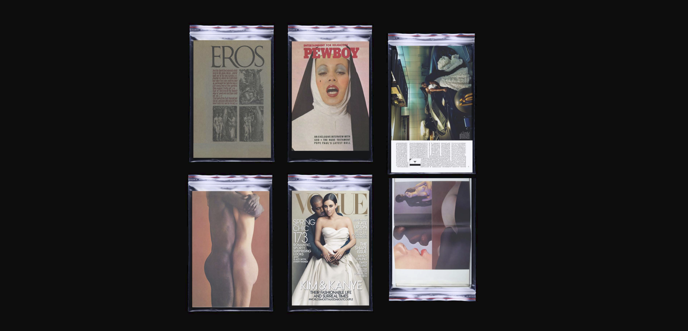
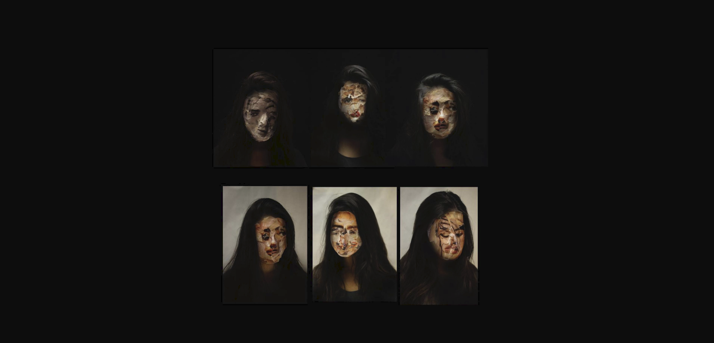
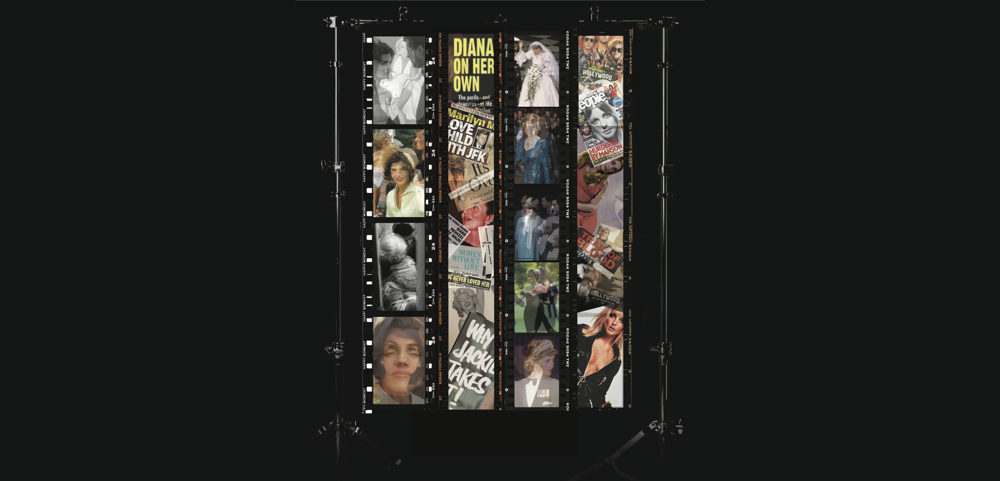

CD CREATIVE ASSIGNMENT
Task: Select an everyday object. Think about how our backgrounds affect the way we look at it. For example, an engineer might want to dismantle it; a scientist might put it under water to see what would happen; a child might use it to stamp a pattern. Pick three ways of reading or using the object - ranging from scientific to experimental - and document them.
OBJECT CHOICE: MAGAZINE
PERSPECTIVE OF THE ANTHROPOLOGIST
In the 1960s, Eros made its debut as an American magazine covering the topics of love, intimacy, and sex. This was the brainchild of editor Ralph Ginzburg and iconic graphic designer Herb Lubalin. After a few issues, Ginzburg was indicted and later imprisoned for obscenity. The magazine received thousands of complaints for showing partial nudity, love scenes from the Bible, and interracial intimacy. Here, I created a series of cultural artifacts showing Eros Magazine juxtaposed with a contemporary Vogue magazine. 50 and some years later, the same thins that were once condemned are now celebrated.

PERSPECTIVE OF THE GIRL
How can I look like her? Magazines promote this image of the ideal woman: long lashes, plump lips, and unblemished skin. Using scraps of beauty editorials I found in magazines, I created a series of masks. This has become the new normal; we have entered into the era of photoshop, niptucks, copy and paste to change our faces into the ideal.

PERSPECTIVE OF THE FILMMAKER
I created film reels showing three of the most reported events in the last 50 years.
1. The love triange of JFK, Marilyn Monroe, and Jackie O.
2. The evolution of Princess Diana.
3. The gruesome murder of Sharon Tate, golden girl of Hollywood cinema.